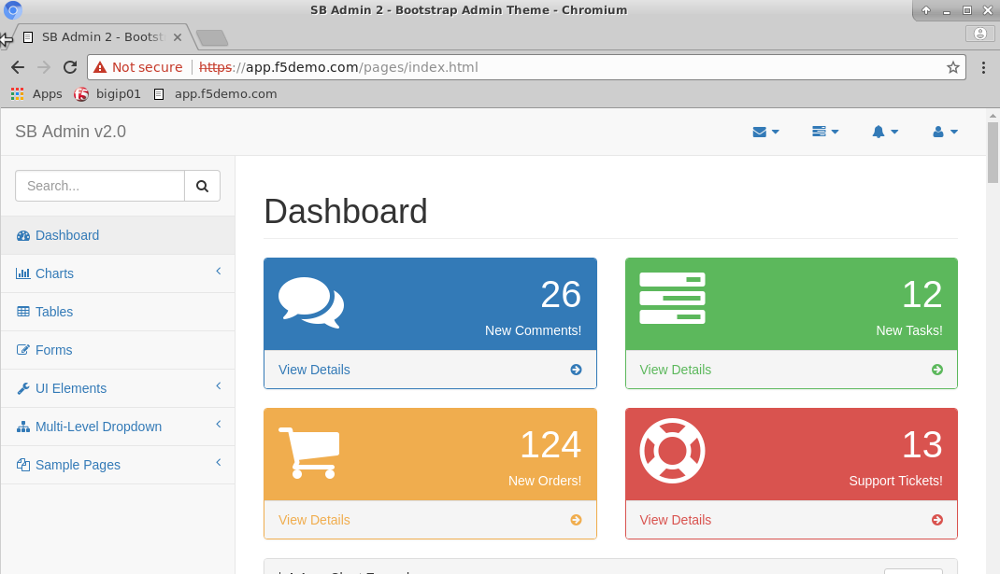
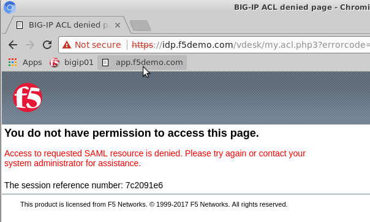

F5 Identity and Access Management Solutions > Class 4: SAML Identity Provider (IdP) Lab > Module 2: Access Control Source | Edit on
Lab 2.2: Test Access Control¶
Now that you have your IdP configured we need to test it to make sure it is working as expected.
Task 1 - Test with an Authorized User¶
Open Chromium and navigate to https://app.f5demo.com
Login with the test credentials
Username Password alice agility You should now see a demo application.

Click the user icon in the top right of the app and logout
Task 2 - Test with an Unauthorized User¶
Navigate to https://app.f5demo.com (you can click the bookmark)
Login with the test credentials
Username Password john agility You should now see an error page since John is not a member of the sales group

- Close the Chromium browser